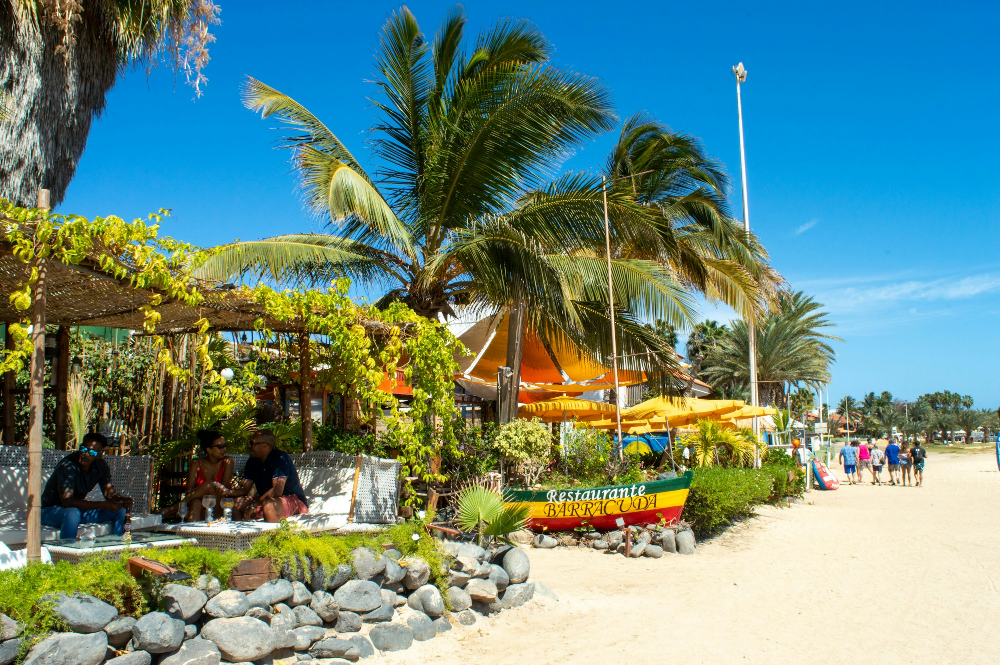

Coastal ease
Fresh air, white curtains, natural textures and a laid-back rhythm.

Coming to Santa Maria · Sal, Cabo Verde
A chef-led breakfast and brunch experience where welcoming Southern flavors meet the easy rhythm of the coast.
Explore the conceptSanta Maria photo by Florian K. / Unsplash
More than breakfast
Two Wooden Spoons is an independently owned breakfast and brunch concept planned for Santa Maria. It brings freshly prepared Southern-style comfort food to a relaxed coastal setting designed for travelers and local residents alike.
The vision is simple: thoughtful food, personal service, good music, and the feeling of an unhurried morning near the beach.
The atmosphere
Designed as an intimate 50–60 seat restaurant, Two Wooden Spoons pairs an open-air beach feeling with a welcoming bar, music, attentive service, and a space that feels comfortable for families, couples, friends, and solo travelers.
Fresh air, white curtains, natural textures and a laid-back rhythm.
A small-room approach where guests feel noticed, welcomed and remembered.
A concept built for visitors while remaining part of the Santa Maria community.
Meet the founder
Founder and trained chef Renee Liddell brings more than 20 years of food-service experience across kitchen operations, guest service, management, purchasing, food safety and team leadership.
Two Wooden Spoons is the next expression of that experience: an independent restaurant centered on consistent food, genuine hospitality and a memorable sense of place.
“A restaurant guests remember as part of their vacation—and local residents enjoy throughout the year.”
The story is just beginning